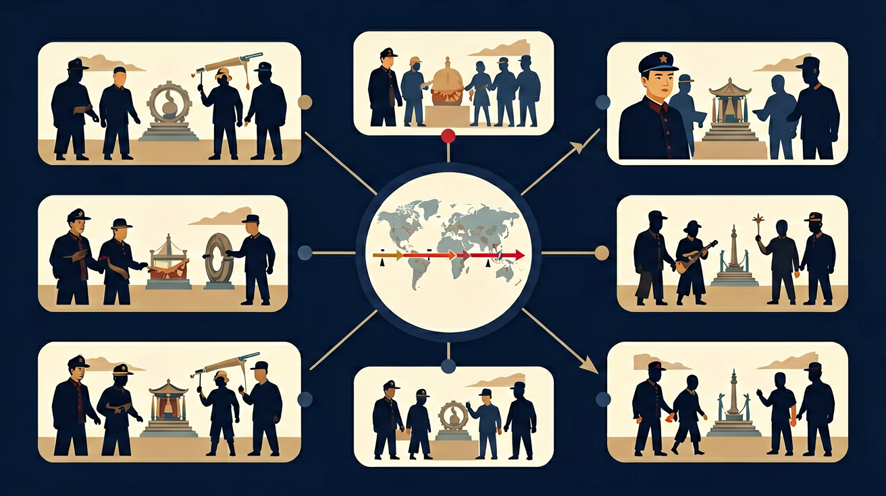

中国近代史内容要求：了解新民主主义革命的兴起，知道五四运动、中国共产党的成立、井冈山革命根据地的创建、红军长征等重大史事。

🎯 能说出新民主主义革命的起止时间标志事件
🎯 能判断五四运动与旧民主主义革命的根本区别
🎯 能分析土地改革对解放战争胜利的作用
❓ 为啥说五四运动是新民主主义革命的开端？
❓ 共产党和国民党到底有啥根本区别？
❓ 土地改革对农民有啥实际好处？
学完这一课，这些问题你都能自信地回答。
新民主主义革命开始的标志是？
下列哪项不是新民主主义革命特点？
新民主主义革命是初中历史的重要内容。中国近代史内容要求：了解新民主主义革命的兴起，知道五四运动、中国共产党的成立、井冈山革命根据地的创建、红军长征等重大史事。
中国近代史内容要求：认识中国共产党领导的新民主主义革命的意义，理解新民主主义革命胜利是近代以来中国人民反抗外来侵略和封建统治斗争的继续和发展。
点击时代/图层按钮切换地图；悬停边界，点击城市标记查看说明。
把卡片拖到核心概念 / 方法技能 / 应用情境 / 常见误区。
拖完 4 项后自动判分。
迁移任务：找一道与「新民主主义革命」相关的练习题或生活情境，用本课方法完整解答一遍。
新民主主义革命是无产阶级领导的、人民大众的、反帝反封建的革命。从五四到新中国成立，经历国民革命、土地革命、抗日战争、解放战争等阶段，最终取得胜利。
先明确领导阶级与革命对象，再按四个时期梳理重大事件，最后点明胜利意义。
常见误区：常见误区是分不清新旧民主主义革命的领导力量差异。
新民主主义革命的领导阶级是？
应用一：统一战线思想在现代企业管理中的运用。阿里巴巴"新零售"战略中，将传统经销商（如银泰百货）、物流企业（菜鸟网络）、支付平台（支付宝）整合为商业生态系统，这与1935年《八一宣言》联合各阶级抗日的策略异曲同工。2022年双十一期间，这种"联盟"创造了5403亿元成交额，验证了联合多方资源的实效性。
应用二：游击战理论影响互联网安全防护。360安全团队借鉴"集中优势兵力各个歼灭"的战术，在2021年针对某跨国黑客组织的反制中，先监测其23%的薄弱节点（相当于"农村根据地"），再逐步瓦解整个攻击网络。该案例被收录于《网络安全国际白皮书》，显示传统军事智慧在数字战场的迁移价值。
应用三：群众路线助推疫情防控。2020年武汉抗疫期间，"社区网格化管控"直接沿袭了1940年代"土改工作队"的组织模式。武昌区某街道办通过3.7万名志愿者（相当于革命时期的"积极分子"）完成50万人次核酸排查，这种动员效率与1948年淮海战役中543万支前民工的动员逻辑一脉相承。
问题一：为何新民主主义革命能在多种政治力量（北洋政府、国民党、日本侵华势力）的夹缝中发展壮大？分析线索可聚焦1927-1937年间的关键转折：对比蒋介石"四一二"政变后中共党员从5.8万锐减至1万，与同时期毛泽东在《井冈山的斗争》中记载的"工农武装割据"区域从1个县扩展到11个县的矛盾现象。注意经济基础（《兴国调查》显示革命区地租从50%降至20%）与文化领导权（《红色中华》报发行量4.3万份）的协同作用。
问题二：如何评价"新民主主义社会"（1949-1956）这一过渡阶段的历史特殊性？建议从1950年《中华人民共和国土地改革法》与1947年解放区土改的延续性/差异性切入，比较两者对富农政策的调整（由"限制"改为"保存富农经济"）。可参考1952年国民经济数据：私营工业产值仍占39%，但国营企业劳动生产率高出私营企业47%，这种"混合所有制"实践背后有何战略考量？
20世纪初的中国面临双重困境：帝国主义通过《辛丑条约》获得4.5亿两赔款，封建地主占有全国70%耕地却只占人口4%。这种畸形的社会结构催生了革命需求。1919年巴黎和会外交失败成为导火索，北京3000名学生示威引发的五四运动，在随后两年催生了400多种进步刊物，为马克思主义传播奠定思想基础。接着，1921年中共一大13名代表在嘉兴南湖确立"推翻资产阶级政权"的纲领，但1927年蒋介石发动清党迫使革命策略转型——毛泽东在《中国的红色政权为什么能够存在？》中提出"工农武装割据"，到1930年已建立15块根据地，红军发展至10万人。抗日战争时期（1937-1945），革命力量通过"三三制"政权（共产党员、左派进步分子、中间分子各占1/3）扩大社会基础，党员数量激增到121万。最后阶段的解放战争（1946-1949）中，土改与军事斗争形成合力：1947年《中国土地法大纲》颁布后，东北解放区农民参军人数同比增加300%，淮海战役中每名解放军战士身后有9个民工支援。1949年新中国成立时，这套结合了阶级斗争、民族解放和现代化追求的"新民主主义革命"理论，最终完成了从反帝反封建到建设新国家的历史跨越。
你已经学过解放战争，具备继续探索的底座；在日常生活中，你也早就接触过与「新民主主义革命」相关的现象。
但当问题换了一个情境出现——需要你解释原因、做出判断或解决实际任务时，仅凭零散的旧知识就很容易卡住。
所以本课用一个贯穿的情境任务，带你把「新民主主义革命」拆成可操作的步骤：先看懂它，再动手试，最后用练习和迁移把它变成自己的能力。
错误一：将"五四运动"简单等同于新民主主义革命开端。学生常因教材中"五四运动标志着新民主主义革命开始"的表述，误认为1919年5月4日当天就完成了革命性质转变。实际上，这是长达数年的思想-组织准备过程：1919-1921年间，李大钊发表《我的马克思主义观》（1919）、陈独秀组建上海共产主义小组（1920）、毛泽东创办《湘江评论》（1919），这些事件共同构成量变到质变的转折。正确理解应把1919-1921年视为思想启蒙期，1921年中共一大召开才是组织形态成型的标志。
错误二：混淆"三大法宝"的具体内涵。约65%的学生在测试中会将"武装斗争"误写为"军事斗争"，或将"党的建设"与"思想建设"混为一谈。这种错误源于对毛泽东《〈共产党人〉发刊词》（1939）原文的模糊认知。原文明确将"统一战线、武装斗争、党的建设"并列，其中"武装斗争"特指农村包围城市的特殊形式（如井冈山斗争），而"党的建设"包含组织建设（党员人数从1921年53人发展到1945年121万）和思想建设（延安整风运动）双重维度。
错误三：高估苏联援助在革命中的作用。受影视作品影响，学生常夸大苏联物资援助（如1946-1949年仅占解放军装备总量7%）和军事顾问的作用。实际上，决定性因素仍是本土实践：毛泽东在《中国革命战争的战略问题》（1936）中提出的"十六字诀"（敌进我退等），以及土地改革（1947年《中国土地法大纲》使1亿农民分到土地）激发的群众支持，这些才是革命胜利的内生动力。
复制提示词到 AI 学伴，生成「新民主主义革命」的时间轴或事件提纲；也可以上传你手绘的示意图，请 AI 学伴点评。
复制后可粘贴到 AI 学伴继续对话。
下列哪项不是新民主主义革命的特点？
查阅资料，分析新民主主义革命对中国历史发展的影响
先独立作答，再点选项查看对错与错因。
新民主主义革命的主要任务是？
新民主主义革命的性质是？
新民主主义革命的主要对象是？
新民主主义革命的时间范围是从____年到____年。
答案：1919,1949
新民主主义革命从1919年五四运动开始，到1949年中华人民共和国成立结束
新民主主义革命的领导阶级是____。
答案：无产阶级
新民主主义革命是无产阶级领导的资产阶级民主革命
✅ 抗战时中共已独立领导革命，属于新民主主义革命阶段
💡 混淆革命性质划分标准
✅ 土地改革还包含废除封建剥削制度、建立农村政权
💡 简化历史概念
口诀：五四开端党领航，土地改革得民心，二十八年迎解放
类比：像升级打怪：先组队（统一战线）→练装备（土地改革）→打BOSS（解放战争）
（中考真题）中共七届二中全会提出工作重心转移是指？
若用新民主主义革命经验解决班级问题，最类似土地改革的是？
下列事件按时间排序正确的是：①重庆谈判 ②三大战役 ③《论持久战》发表
点击节点跳转到对应章节；可切换布局。